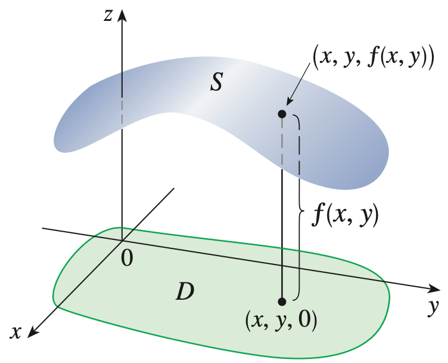
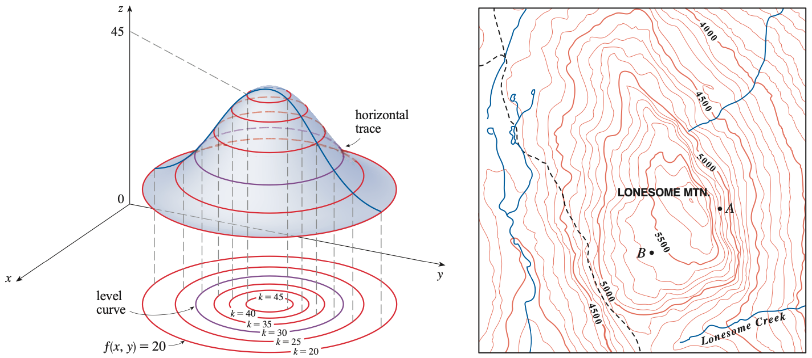
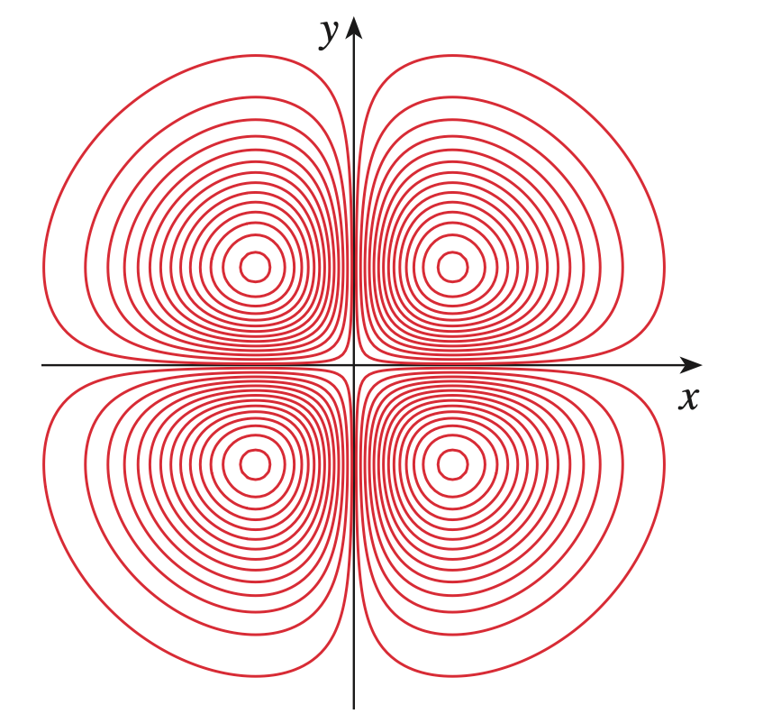
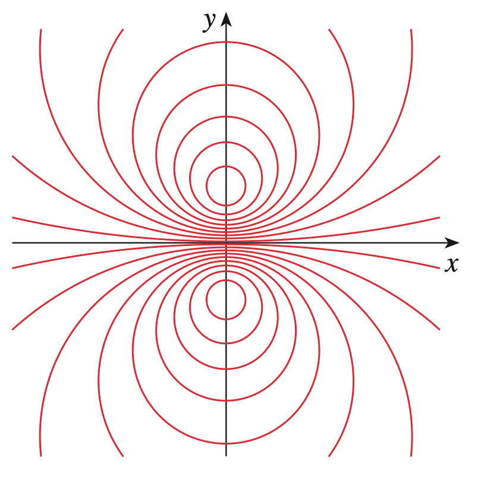
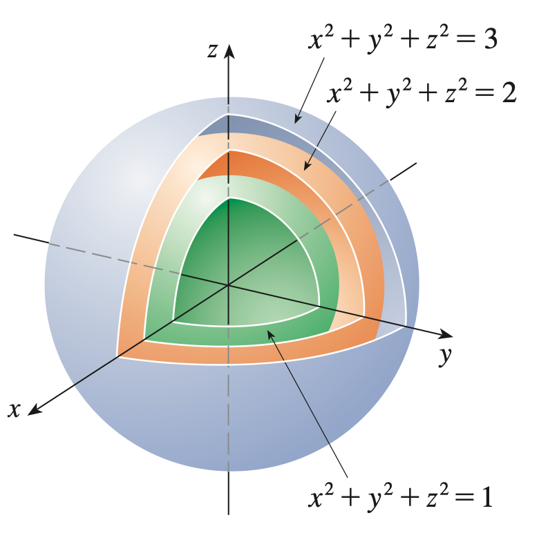
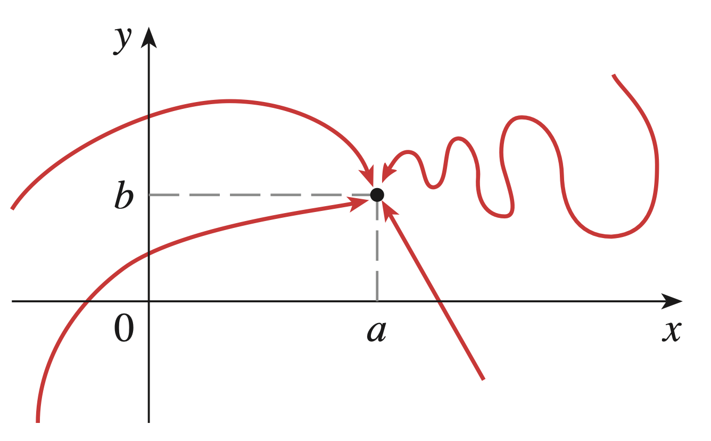
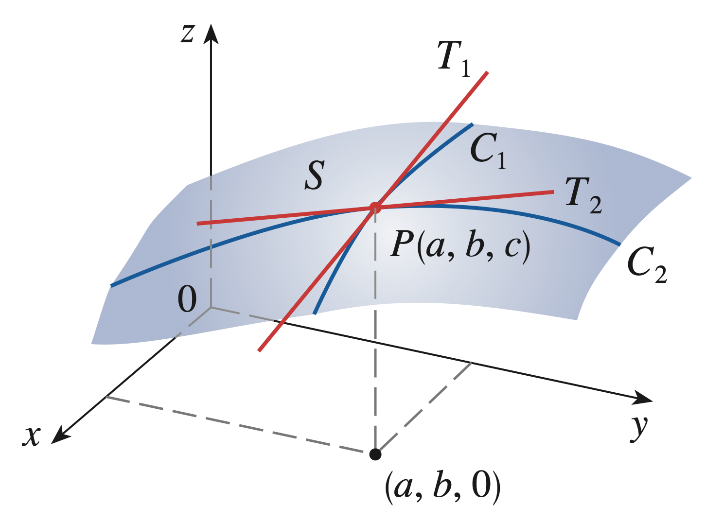
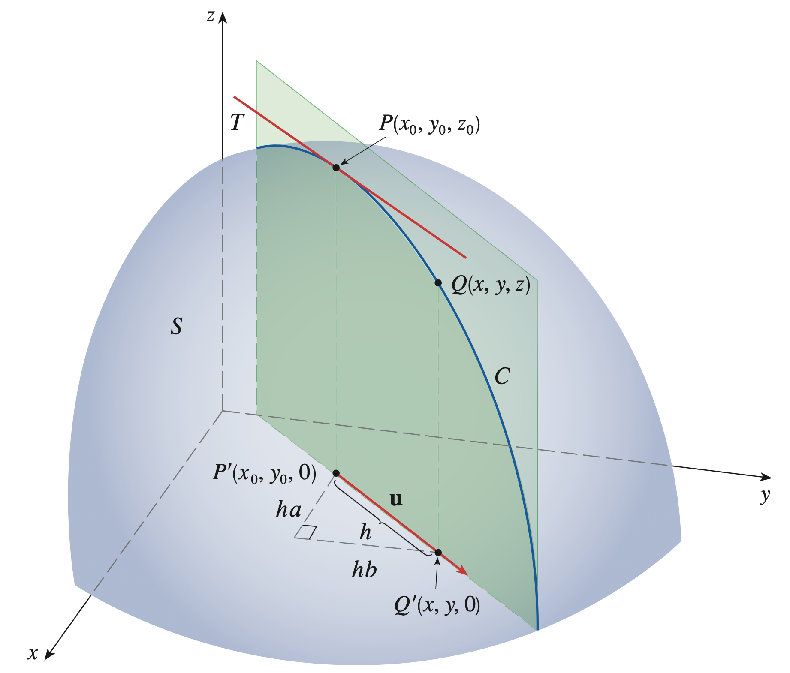
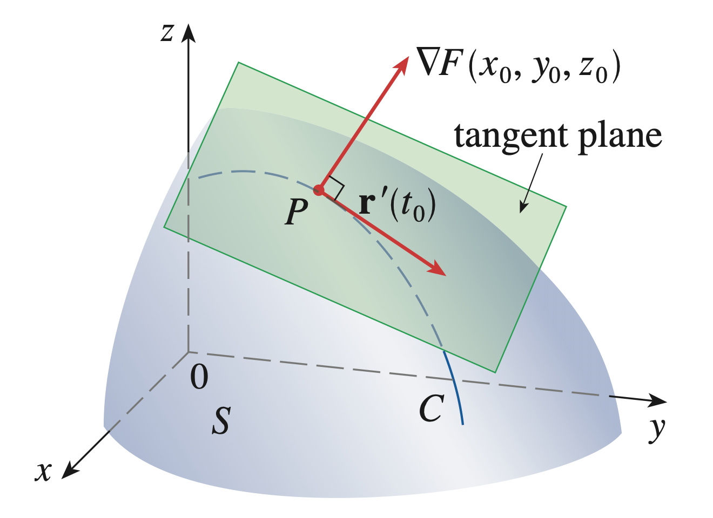
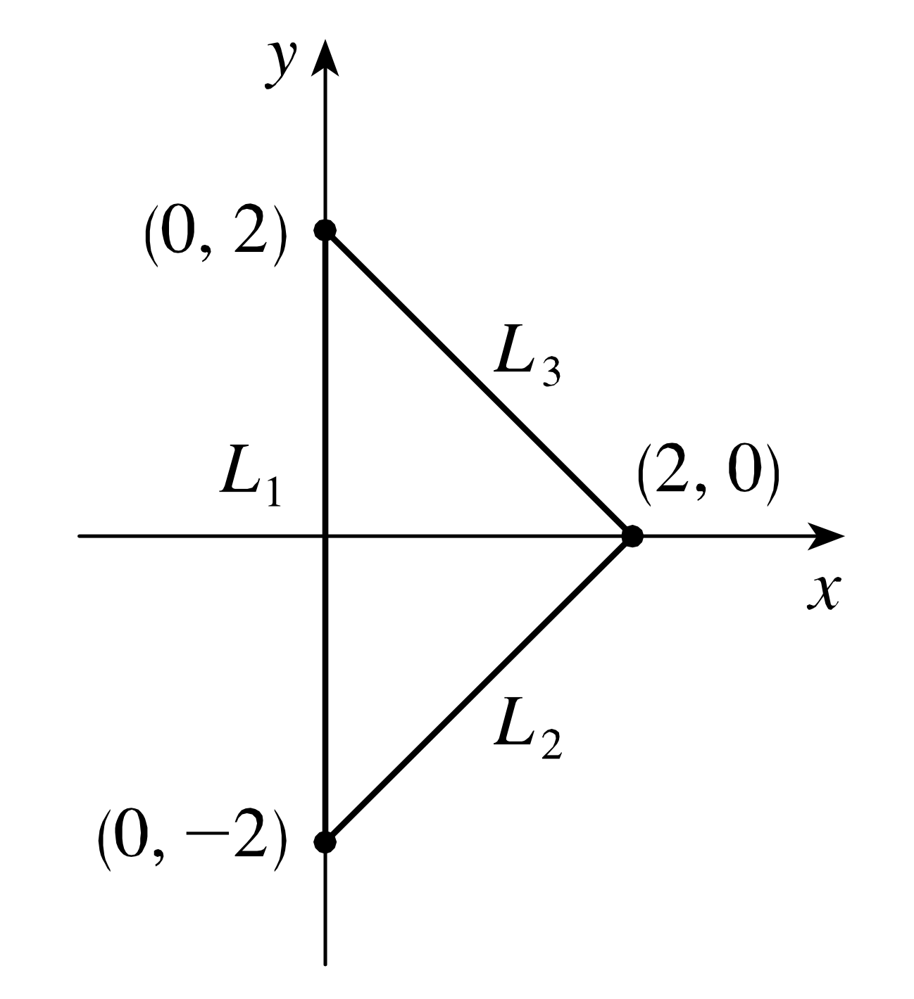

We can always identify the real plane \(\mathbb {R}^2\) as the \(xy\)-axis in 3-space \(\mathbb {R}^3\) using the identification \((x,y)\mapsto (x,y,0)\) with the \(z\) coordinate set to 0. In this way we can think of \(\mathbb {R}^2\) as a subset of \(\mathbb {R}^3\).
Definition. Let \(D\subseteq \mathbb {R}^2\) be a subset of the \(xy\) plane. A function \begin {align*} &f:D\longrightarrow \mathbb {R}\\ &(x,y)\mapsto f(x,y) = z \end {align*}
of two variables is a rule that assigns to each ordered pair of real numbers \((x, y)\) in \(D\) a unique real number in the \(z\) coordinate line denoted by \(z=f(x, y)\). The subset \(D\) of the real plane is the domain of \(f\) and its range is the set of values that \(f\) takes on.
In this setting, \(x\) and \(y\) are independent variables while \(z\) is the dependent variable.
If \(f\) is a function of two variables with domain \(D\), then the graph of \(f\) is the set of all points \((x, y, z)\) in \(\mathbb {R}^3\) such that \(z = f(x, y)\) and \(x, y\) is in \(D\).

The graph of a function \(f\) of two variables is a surface \(S\) with equation \(z = f (x, y)\).
Definition. The level curves of a function \(f\) of two variables are the curves with equations \(f (x, y) = k\), where k is a constant in the range of \(f\).

Textbook Example (pg 944)
 (a) Level curves of \(f(x,y) = -xye^{-x^2-y^2}\)  (b) Level curves of \(f(x,y) = \frac {-3y}{x^2+y^2+1}\)
We can always identify the real 3-space \(\mathbb {R}^3\) as the \(xyz\)-hyperplane in 4-space \(\mathbb {R}^4\) using the identification \((x,y,z)\mapsto (x,y,z,0)\) with the last coordinate set to 0. In this way we can think of \(\mathbb {R}^3\) as a subset of \(\mathbb {R}^4\).
Definition. Let \(D\subseteq \mathbb {R}^3\) be a subset of the \(xyz\) 3-space. A function \begin {align*} &f:D\longrightarrow \mathbb {R}\\ &(x,y,z)\mapsto f(x,y,z) = w \end {align*}
of three variables is a rule that assigns to each ordered tripple of real numbers \((x, y, z)\) in \(D\) a unique real number in the \(w\) coordinate line denoted by \(w=f(x, y, z)\). The subset \(D\) of the real 3-space is the domain of \(f\) and its range is the set of values that \(f\) takes on.
In this setting, \(x,y,\) and \(z\) are independent variables while \(w\) is the dependent variable.
If \(f\) is a function of three variables with domain \(D\), then the graph of \(f\) is the set of all points \((x, y, z,w)\) in \(\mathbb {R}^4\) such that \(w = f(x, y, z)\) and \(x, y, z\) is in \(D\).
This is usually very hard for our three dimensional minded imaginations to draw.
In any case, the graph of a function \(f\) of three variables is a 3-dimensional object \(B\) sitting in \(\mathbb {R}^4\) with equation \(w = f (x, y, z)\).
We CAN, however, draw the shadows of horizontal traces of \(B\) made by setting \(w\) equal to a constant. These appear as surfaces in \(\mathbb {R}^3\) which we call the level surfaces of \(f\).
Definition. The level surfaces of a function \(f\) of three variables are the surfaces with equations \(f (x, y,z) = k\), where k is a constant in the range of \(f\).

Limits from Calculus A and B:
Definition. Let \(f(x)\) be a real valued function. Suppose \(f(x)\) is defined when \(x\) is near the number \(a\). (This means that \(f\) is defined on some open interval that contains \(a\), except possibly at \(a\) itself.) Then we write \[\lim _{x\to a}f(x) = L\] and say “the limit of \(f(x)\) as \(x\) approaches \(a\) equals \(L\)” if we can make the values of \(f(x)\) arbitrarily close to L (as close to L as we like) by restricting \(x\) to be sufficiently close to \(a\) (on either side of \(a\)) but not equal to \(a\).
Attempt at a limit definition for \(z=f(x,y)\):
Definition. Let \(f(x,y)\) be a real valued function defined on a domain \(D\subset \mathbb {R}^2\) surrounding the point \((a,b)\). (This means that points in the domain \(D\) are arbitrarily close to \((a,b)\) but \(f\) may not be defined at the point \((a,b)\) itself.) Then we write \[\lim _{(x,y)\to (a,b)}f(x,y) = L\] and say “the limit of \(f(x,y)\) as \((x,y)\) approaches \((a,b)\) equals \(L\)” if we can make the values of \(f(x,y)\) arbitrarily close to L (as close to L as we like) by restricting \((x,y)\) to be sufficiently close to \((a,b)\) (meaning in all directions following any path in the plane that goes through \((a,b)\)) but not equal to \((a,b)\).
Formal definition of a limit for \(z=f(x,y)\):
Definition. Let \(f(x,y)\) be a real valued function defined on a domain \(D\subset \mathbb {R}^2\) whose points are arbitrarily close to \((a,b)\). We say the limit of \(f(x,y)\) as \((x,y)\) approaches \((a,b)\) is \(L\) and write \[\lim _{(x,y)\to (a,b)}f(x,y) = L\] if for every given distance \(\epsilon > 0\) we can find a corresponding distance \(\delta >0\) such that if \((x,y)\in D\) and the distance between \((x,y)\) and \((a,b)\) satisfies \[0<\sqrt {(x-a)^2+(y-b)^2}<\delta \] then \(|f(x,y)-L|<\epsilon \).
Standard method to show a limit does not exist:

If \(f(x, y) \longrightarrow L_1\) as \((x, y)\longrightarrow (a,b)\) along a path \(C_1\), but \(f(x, y) \longrightarrow L_2\) as \((x, y)\longrightarrow (a,b)\) along a path \(C_2\), and \(L_1 \neq L_2\), then \[\lim _{(x, y)\to (a,b)}f(x, y)\] does not exist.
The limit of a sum is the sum of the limits.
The limit of a difference is the difference of the limits.
The limit of a constant times a function is the constant times the limit of the function.
The limit of a product is the product of the limits.
The limit of a quotient is the quotient of the limits (provided that the limit of the denominator is not zero).
A function \(f\) of two variables is called continuous at \((a, b)\) if \[\lim _{(x,y)\to (a,b)} f(x, y) = f(a, b)\] We say that \(f\) is continuous on \(D\) if \(f\) is continuous at every point \((a, b)\) in \(D\).
A polynomial function of 2 variables is a sum and product of terms involving only constants, powers of \(x\), and powers of \(y\). For example: \(p(x,y) = x^2+2y^2-3x^3y+17\).
A rational function of 2 variables is a ratio of polynomial functions, for example: \(q(x,y) = \frac {3xy-2x+1}{x^2+y^2}\).
Notice:
\(\lim _{(x,y)\to (a,b)} x = a\) and
\(\lim _{(x,y)\to (a,b)} y = b\) and
\(\lim _{(x,y)\to (a,b)} k = k\) for any constant \(k\).
Thus, by the limit laws, polynomials and rational functions are continuous everywhere they are defined.
If \(f\) is a function of two variables, its partial derivatives are the functions \(f_x\) and \(f_y\) defined by \[f_x(x,y) = \lim _{h\to 0} \frac {f(x+h,y)-f(x,y)}{h} \] \[f_y(x,y) = \lim _{h\to 0} \frac {f(x,y+h)-f(x,y)}{h} \]
Setting \(z=f(x,y)\), we use the following notations interchangeably: \[f_x(x,y) = f_x = \frac {\partial f}{\partial x} =\frac {\partial }{\partial x} f(x,y) = \frac {\partial z}{\partial x} = D_x f \] \[f_y(x,y) = f_y = \frac {\partial f}{\partial y} =\frac {\partial }{\partial y} f(x,y) = \frac {\partial z}{\partial y} = D_y f \]
The partial derivative of a function with respect to a variable is just the ordinary derivative of the function of a single variable that we get by keeping all the other variables fixed.
In the case of a function of two variables \(z=f(x,y)\):
To find \(f_x\), regard y as a constant and differentiate \(f(x,y)\) with respect to \(x\).
To find \(f_y\), regard x as a constant and differentiate \(f(x,y)\) with respect to \(y\).
The partial derivatives of \(f\) at \((a, b)\) are the slopes of the tangents lines \(T_1\) and \(T_2\) to curves \(C_1\) and \(C_2\) along the surface \(z=f(x,y)\) given by the traces in the \(x\) and \(y\) directions.

For functions of three or more. variables, all the same definitions and notations apply. Setting \(w=f(x,y,z)\): \[f_x(x,y,z) = \lim _{h\to 0} \frac {f(x+h,y,z)-f(x,y,z)}{h} \] \[f_y(x,y,z) = \lim _{h\to 0} \frac {f(x,y+h,z)-f(x,y,z)}{h} \] \[f_z(x,y,z) = \lim _{h\to 0} \frac {f(x,y,z+h)-f(x,y,z)}{h} \] \[f_x(x,y,z) = f_x = \frac {\partial f}{\partial x} =\frac {\partial }{\partial x} f(x,y,z) = \frac {\partial w}{\partial x} = D_x f \] \[f_y(x,y,z) = f_y = \frac {\partial f}{\partial y} =\frac {\partial }{\partial y} f(x,y,z) = \frac {\partial w}{\partial y} = D_y f \] \[f_z(x,y,z) = f_z = \frac {\partial f}{\partial z} =\frac {\partial }{\partial z} f(x,y,z) = \frac {\partial w}{\partial y} = D_z f \]
The notations for higher order derivatives tell us the order in which we differentiate. \(z=f(x,y)\): \[(f_x)_x = f_{xx} = \frac {\partial }{\partial x} \frac {\partial f}{\partial x} =\frac {\partial ^2 f}{\partial x^2} = \frac {\partial ^2 z}{\partial x^2} \] \[(f_x)_y = f_{xy} = \frac {\partial }{\partial y} \frac {\partial f}{\partial x} =\frac {\partial ^2 f}{\partial y\partial x} = \frac {\partial ^2 z}{\partial y \partial x} \] \[(f_y)_x = f_{yx} = \frac {\partial }{\partial x} \frac {\partial f}{\partial y} =\frac {\partial ^2 f}{\partial x\partial y} = \frac {\partial ^2 z}{\partial x \partial y} \] \[(f_y)_y = f_{yy} = \frac {\partial }{\partial y} \frac {\partial f}{\partial y} =\frac {\partial ^2 f}{\partial y^2} = \frac {\partial ^2 z}{\partial y^2} \]
Luckily, there is a famous theorem that says, for continuous functions with continuous derivatives, the order in which you differentiate doesn’t matter:
Theorem (Clairaut’s Theorem). Suppose \(f(x,y)\) is defined on a disk \(D\) that contains the point \((a, b)\). If the functions \(f_{xy}\) and \(f_{yx}\) are both continuous on D, then \(f_{x y}(a, b) = f_{yx}(a, b)\).
This works even for third and higher derivatives, for example, the third derivative \[f_{xyy}=(f_{xy})_y = \frac {\partial }{\partial y} \left (\frac {\partial f^2}{\partial y\partial x}\right ) = \frac {\partial f^3}{\partial y^2\partial x}\] of a function \(f(x,y)\) satisfies \[f_{xyy} = f_{yxy} = f_{yyx}\] if all these functions are continuous.
Suppose \(f(x,y)\) has continuous partial derivatives and \((x_0, y_0)\) is in the domain of \(f\). Set \(z_0=f(x_0,y_0)\).
An equation of the tangent plane to the surface \(z=f(x,y)\) at the point \(P(x_0, y_0, z_0)\) on the surface is \[z-z_0 = f_x(x_0,y_0)(x-x_0) + f_y(x_0,y_0)(y-y_0)\]
For a fixed point \((a,b)\) in the domain, (remembering that \(z_0 = f(a,b)\) when \(x_0=a\) and \(y_0=b\)), we get an equation for the linearization of \(f\) near the point \((a,b)\): \[f(x,y)\approx L(x,y) =f(a,b) + f_x(a,b)(x-a) + f_y(a,b)(y-b)\] We think of this as the linear approximation of \(f\) at \((a,b)\).
There is a formal definition of differentiability (see textbook), but for our purposes the following theorem will usually be enough:
Theorem. Let \(f\) be a function of two variables \(x\) and \(y\).
If the partial derivatives \(\frac {\partial f}{\partial x}\) and \(\frac {\partial f}{\partial y}\) exist near \((a,b)\) and are continuous at \((a,b)\) then \(f\) is differentiable at \((a,b)\).
Suppose \(z=f(x,y)\) is a differentiable function of \(x\) and \(y\), where \[x = g(t) \hspace {0.5cm} \text {and} \hspace {0.5cm} y=h(t)\] are both differentiable functions of \(t\). Then the composition \[z(t) = f(x(t), y(t))\] is a differentiable function of \(t\) and \[\frac {d z}{d t} = \frac {\partial f}{\partial x} \frac {d x}{d t} + \frac {\partial f}{\partial y} \frac {d y}{d t}\] or, if you like \[\frac {d z}{d t} = \frac {\partial z}{\partial x} \frac {d x}{d t} + \frac {\partial z}{\partial y} \frac {d y}{d t}\]
Suppose \(z=f(x,y)\) is a differentiable function of \(x\) and \(y\), where \[x = g(s,t) \hspace {0.5cm} \text {and} \hspace {0.5cm} y=h(s,t)\] are both differentiable functions of \(s\) and \(t\). Then the composition \[z(s,t) = f(x(s,t), y(s,t))\] is a differentiable function of \(s\) and \(t\) and \[\frac {\partial z}{\partial s} = \frac {\partial z}{\partial x} \frac {\partial x}{\partial s} + \frac {\partial z}{\partial y} \frac {\partial y}{\partial s}\hspace {0.8cm} \frac {\partial z}{\partial t} = \frac {\partial z}{\partial x} \frac {\partial x}{\partial t} + \frac {\partial z}{\partial y}. \frac {\partial y}{\partial t}\]
The Chain Rule (General Version):
Suppose:
Then \(u\) is a differentiable function of \(t_1,\ldots t_m\) and the partial derivative of \(u\) with respect to \(t_i\) is \[\frac {\partial u}{\partial t_i} = \frac {\partial u}{\partial x_1} \frac {\partial x_1}{\partial t_i} + \frac {\partial u}{\partial x_2} \frac {\partial x_2}{\partial t_i} + \cdots + \frac {\partial u}{\partial x_n} \frac {\partial x_n}{\partial t_i}.\]
This expression can easily be derived from a tree diagram of partials.

The directional derivative of \(f(x,y)\) at \((x_0,y_0)\) in the direction of the unit vector \(\mathbf {u}=\langle a,b\rangle \) is \[D_{\mathbf {u}}f(x_0,y_0) = \lim _{h\to 0}\frac {f(x_0+ha,y_0+hb) - f(x_0,y_0)}{h}\] if this limit exists.
If \(f\) is a differentiable function of \(x\) and \(y\), then \(f\) has a directional derivative in the direction of any unit vector \(\mathbf {u} = \langle a, b\rangle \) and \[ D_{\mathbf {u}} f(x,y) = f_x(x,y)a + f_y(x,y)b\]
If \(f\) is a function of two variables \(x\) and \(y\), then the gradient of \(f\) is the vector function \(\nabla f\) defined by \[\nabla f(x,y) = \langle f_x(x,y), f_y(x,y) \rangle = \frac {\partial f}{\partial x}\mathbf {i} + \frac {\partial f}{\partial y}\mathbf {j}\] making \[ D_{\mathbf {u}} f(x,y) = \nabla f \cdot \mathbf {u}\] for any unit vector \(\mathbf {u}\).
This generalizes to any dimension. Indeed we can write the directional derivative’s limit definition in vector notation.
Let \(\mathbf {r}_0\) be a position vector for a point in space, and let \(\mathbf {u}\) be a unit vector. Then \[D_{\mathbf {u}}f(\mathbf {r}_0) = \lim _{h\to 0}\frac {f(\mathbf {r}_0+h\mathbf {u}) - f(\mathbf {r}_0)}{h}\]
In the case that we have \(w=f(x,y,z)\) and \(\mathbf {r}_0 = \langle x_0, y_0, z_0 \rangle \) with \(\mathbf {u} = \langle a,b,c \rangle \) this becomes \[D_{\mathbf {u}}f(x_0,y_0,z_0) = \lim _{h\to 0}\frac {f(x_0+ha,y_0+hb, z_0+hc) - f(x_0,y_0, z_0)}{h}\] if this limit exists. The gradient of \(f\) is now the vector function \[\nabla f(x,y,z) = \langle f_x(x,y,z), f_y(x,y,z), f_z(x,y,z) \rangle = \frac {\partial f}{\partial x}\mathbf {i} + \frac {\partial f}{\partial y}\mathbf {j}+\frac {\partial f}{\partial z}\mathbf {k}\] and it is not hard to deduce that \[ D_{\mathbf {u}} f(x,y) = \nabla f \cdot \mathbf {u} = f_x(x,y,z)a + f_y(x,y,z)b + f_z(x,y,z)c \]
Let \(f\) be a function of two or three variables. Remember that \(\mathbf {x}=\langle x,y\rangle \) or \(\mathbf {x}=\langle x,y,z\rangle \) (depending on the dimension). Consider ALL possible directional derivatives of \(f\) at a given point. These give the rates of change of \(f\) in all possible directions.
In which of these directions does \(f\) change fastest, and what is the maximum rate of change?
Theorem. The maximum value of the directional derivative \(D_{\mathbf {u}}f(\mathbf {x})\) is \(|\nabla f(\mathbf {x})|\) and it occurs when \(\mathbf {u}\) has the same direction as the gradient vector \(\nabla f(\mathbf {x})\).
Let \(F(x,y,z)\) be a function of three variables and consider the level surface \(S\) given by the level set \(F(x,y,z)=k\).
The gradient vector \(\nabla F(x_0, y_0, z_0)\) at a point \(P(x_0, y_0, z_0)\) on \(S\) is perpendicular to the tangent vector to EVERY space curve \(C\) on \(S\) that passes through \(P\).
We say the gradient vector is orthogonal to the level surface itself.
The same thing happens in one fewer dimension also: the gradient vector of \(f(x,y)\) is orthogonal to the level curve \(f(x,y)=k\).

Thus the tangent plane to the level surface \(F(x,y,z)=k\) at \(P(x_0, y_0, z_0)\) on \(S\) is the plane that passes through \(P\) and has normal vector \(\nabla F(x_0, y_0, z_0)\). It has an equation given by \[\nabla F(x_0, y_0, z_0)\cdot \langle x-x_0, y-y_0, z-z_0\rangle = 0\] which opens up to \[F_x(x_0, y_0, z_0)(x-x_0)+ F_y(x_0, y_0, z_0)(y-y_0)+F_z(x_0, y_0, z_0)(z-z_0)= 0.\]
Let \(f(x,y)\) be a function of two variables.
\(f\) has a local maximum at \((a,b)\) if \(f(x,y)\leq f(a,b)\) when \((x,y)\) is near \((a,b)\), meaning \((x,y)\) is inside some small disk centered at \((a,b)\). The value \(f(a,b)\) is called the local maximum value.
\(f\) has a local minimum at \((a,b)\) if \(f(x,y)\geq f(a,b)\) when \((x,y)\) is near \((a,b)\), meaning \((x,y)\) is inside some small disk centered at \((a,b)\). The value \(f(a,b)\) is called the local minimum value.
First Derivative Test If \(f\) has a local maximum or minimum at \((a, b)\) and the first-order partial derivatives of \(f\) exist there, then \(f_x(a, b) = 0\) and \(f_y(a, b) = 0\).
In this case the tangent plane to the surface \(z=f(x,y)\) at the point \((a,b,f(a,b))\) will be horizontal.
A point \((a, b)\) is called a critical point (or stationary point) of \(f\) if \(f_x(a, b) = 0\) and \(f_y(a, b) = 0\), or if one of these partial derivatives does not exist.
Not all critical points result in a local maximum or local minimum.
Second Derivative Test Suppose the second partial derivatives of \(f\) are continuous on a disk with center \((a, b)\), and suppose that \((a, b)\) is a critical point of \(f\). Set \[D(a,b) = \left | \begin {matrix} f_{xx}(a,b) & f_{xy}(a,b)\\ f_{yx}(a,b) & f_{yy}(a,b) \end {matrix} \right | = f_{xx}(a,b)f_{yy}(a,b) - [f_{xy}(a,b)]^2\]
If \(D>0\) and \(f_{xx}(a,b)>0\) then \(f(a,b)\) is a local minimum.
If \(D>0\) and \(f_{xx}(a,b)<0\) then \(f(a,b)\) is a local maximum.
If \(D<0\) then \((a,b)\) is a saddle point of \(f\).
If \(D=0\) then we get no information.
Let \((a,b)\) be a point in the domain \(D\) of \(f(x,y)\). Then \(f(a,b)\) is the
Let \(D\subseteq \mathbb {R}^2\) be a subset of the plane.
Theorem (Extreme Value Theorem for Functions of Two Variables). If \(f\) is continuous on a closed, bounded set \(D\) in \(\mathbb {R}^2\), then \(f\) attains an absolute maximum value \(f(x_1, y_1)\) and an absolute minimum value \(f(x_2, y_2)\) at some points \((x_1, y_1)\) and \((x_2, y_2)\) in \(D\).
Thus extreme values of \(f\) occur either (1) at critical points of \(f\), or (2) along the boundary of \(D\). To find the absolute maximum and minimum values:
Find the absolute maximum and minimum values of the function \(f(x, y) = x^2 + y^2-2x\) on the closed triangular region \(D\) with vertices \(P(0,2)\), \(Q(0,-2)\), and \(R(2,0)\).

Find the absolute maximum and minimum values of the function \(f(x, y) = x^2 - 2xy + 2y\) on the rectangle \[D = \{(x, y) \in \mathbb {R}^2 | 0 \leq x \leq 3, 0 \leq y \leq 2\}\]